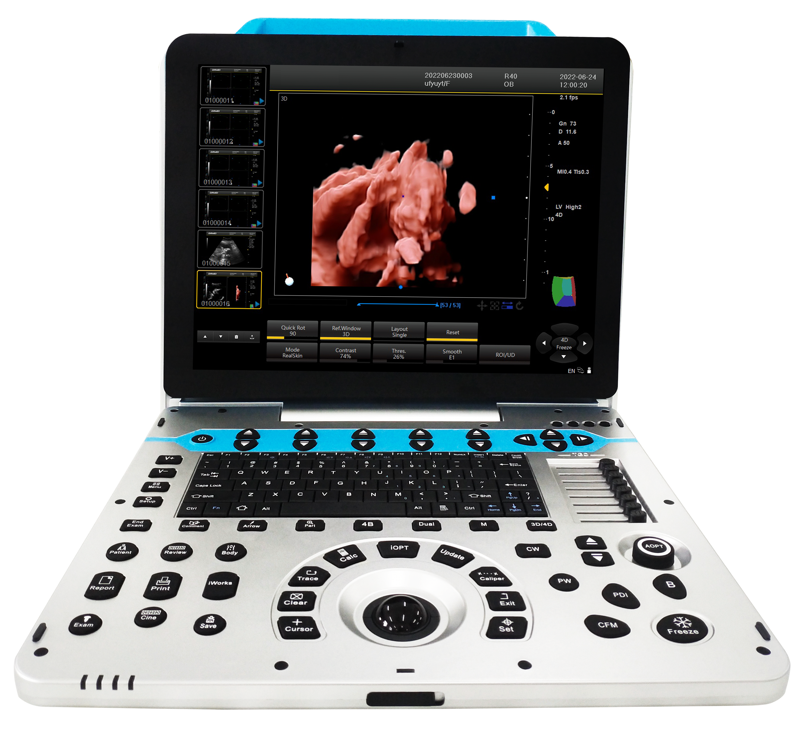
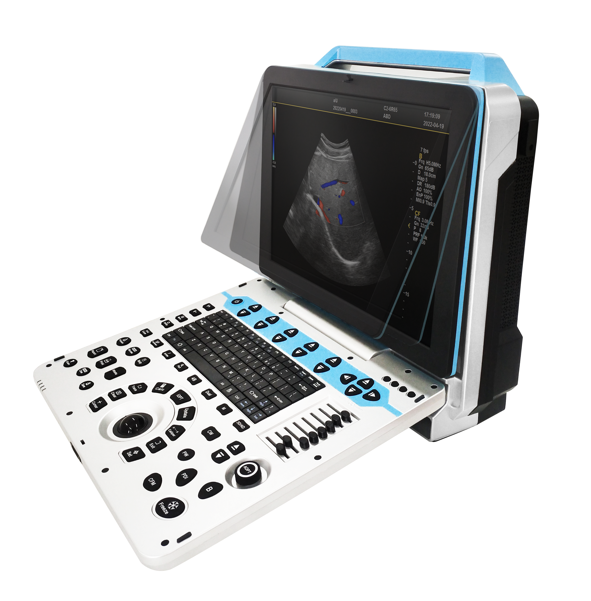
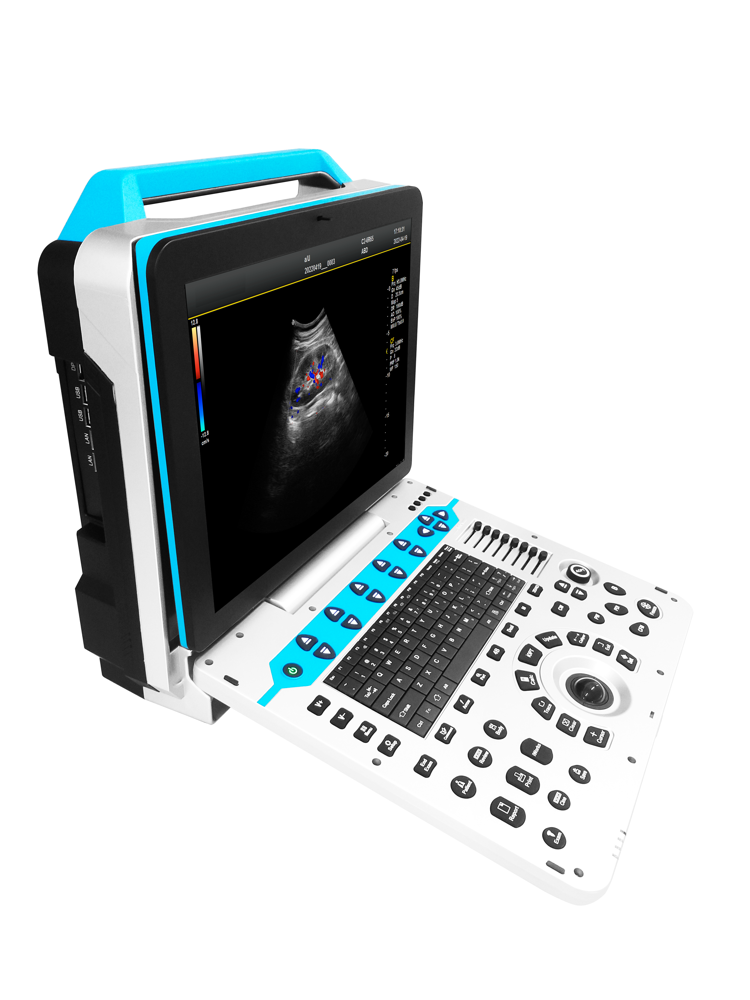
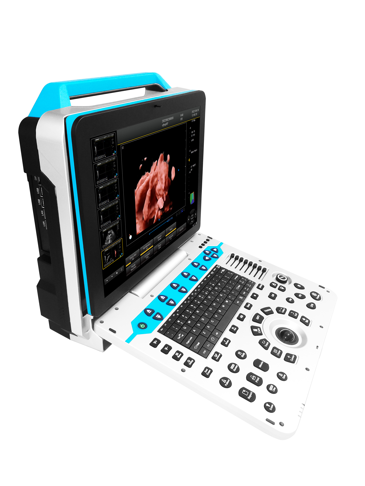
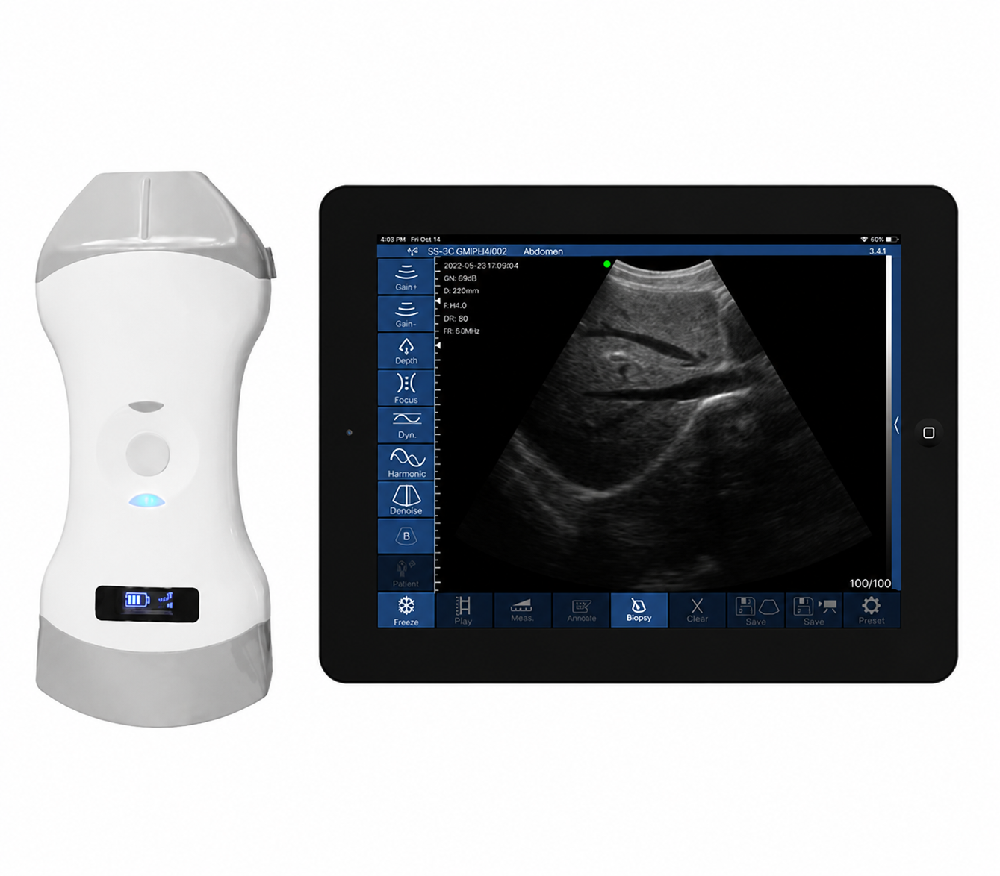

Veterinary Use
Ultrasound
CGVU-21 Pro Veterinary Color Doppler Ultrasound System
High-performance veterinary color Doppler ultrasound system for small and large animal imaging.
View productHome > Ultrasound > Portable Color Ultrasound
The CG-P31 is a portable full digital color Doppler ultrasound system designed for hospitals, clinics, and point-of-care diagnostic applications.




The CG-P31 Portable Color Ultrasound System is a full digital color Doppler ultrasound solution designed for hospitals, clinics and point-of-care diagnostic applications. Featuring a compact portable design, high-performance imaging platform and multiple probe compatibility, the CG-P31 provides reliable diagnostic imaging for general imaging, cardiology, obstetrics, gynecology, urology, vascular and musculoskeletal applications. With a 15-inch HD medical display, built-in battery system and advanced image processing technology, the CG-P31 delivers flexible ultrasound examination capability in various clinical environments.
Advanced subarray probe technology provides high-resolution image details and improves diagnostic confidence. Intelligent operation supports preset examination conditions, one-click image optimization, and fast acquisition of high-quality ultrasound images.
Ultrasound
High-performance veterinary color Doppler ultrasound system for small and large animal imaging.
View product
Ultrasound
Wireless dual-head ultrasound scanner integrating convex and linear probes.
View productShare your market, application, and target configuration. The CHIGOX team will follow up by email.